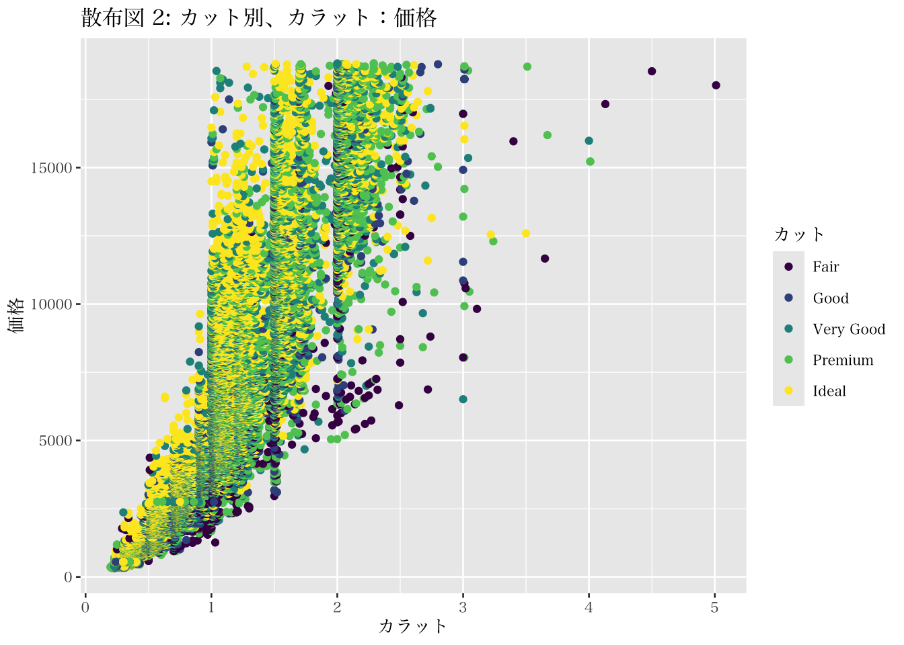

6.4 二変数間の関係の要約
ここまでの内容は（カテゴリ変数に関する一部の説明を除き）、一つの変数に関する要約と可視化を扱っていた。しかし、データ分析では二つの異なる変数間の関係を捉えたいと考えることも多い。二変数間の関係を数量的に要約するための指標の代表例が共分散や相関係数である。データ数をnとする変数xとyの共分散（\(S_{xy}\)）は、以下のように定義される。なお、Rで共分散を求める際には cov() 関数を用いる。
\(S_{xy}=\frac{1}{n}\sum_i^n (x_i-\bar{x})(y_i-\bar{y})\)
また、\(S_x\)と\(S_y\)をそれぞれxとyの分散とし、相関係数（\(\rho_{xy}\)）は以下のように定義される。Rで相関係数を求める際には cor() 関数を用いる。
\(\rho_{xy}=\frac{S_{xy}}{\sqrt{S_x^2}\cdot \sqrt{S_y^2}}\)
共分散は、二つのデータ間の共変動を示す指標であるものの、この数値を持って我々研究者が二変数の関係について（例えばその強弱などを）解釈するのは困難である。そこで、二変数間の関係を数値的に解釈する場合には、一般的に相関係数を用いる。相関係数は、-1 から 1 までの値を取り、正の値を取る場合は正の相関、負の値を取る場合は負の相関を、着目している二つの変数が持つことが知られている。また、相関係数が正（負）の値かつ1に近いほど強い正（負）の相関であることが知られている。ただし、相関係数で表される二変数間の関係は、線形関係の程度である。言い換えると、相関が高いとはデータがどれだけ直線上に集まって分布しているかを示しており、グラフ等で示される線形関係の傾きについては何も回答することができないという点に注意が必要である。 例えば、以下のようなデータセットを考える。
## # A tibble: 5 × 3
## x1 y1 y2
## <dbl> <dbl> <dbl>
## 1 -3 16 8
## 2 -1 12 6
## 3 0 10 5
## 4 2 6 3
## 5 5 0 0このデータセットにおける x1 と y1 の相関係数は -1 であり、両者の関係を図で示すと、すべてのデータが直線上（\(y=-2x+10\)）に並ぶことがわかる。一方で、x1 と y2 との相関係数も -1 であるものの、両者の線形関係は \(y=-x+5\)である。このことからも、相関係数が線形関数の傾きや切片についての情報は何も持たないことがわかる。
## [1] -1また我々は、二変数間の相関係数がゼロであることが、両者が無関係であることを意味しないことにも注意をしなければならない。例えば、以下のようなデータセットにおけるA と B の相関は 0 になる。
## # A tibble: 5 × 2
## A B
## <dbl> <dbl>
## 1 -2 4
## 2 -1 1
## 3 0 0
## 4 1 1
## 5 2 4## [1] 0しかしながら、両者の関係を描画すると、\(y = x^2\) という二次関数の関係にあることがわかる。つまり、相関係数がゼロだからといって、二つの変数間に関係がないと結論づける事はできず、相関ではなく異なる複数の分析アプローチによって関係を特定していくことが必要になる。
ggplot(data = AB, mapping = aes(x = A, y = B)) +
geom_point() +
geom_smooth(method = lm, formula = y ~ x + I(x^2), se = FALSE)勘の良い読者であればすでに気づいているかも知れないが、二変数間の関係についての可視化もggplot2にて対応できる。具体的には、geom_point()という関数を用いるのだが、それだけではなく、mappingに対する引数として、x と y 二つの変数を指定することが必要になる。ダイアモンドの価格は、カラット数に大きく依存すると考えられる。そこで、以下のようにカラット数と価格との間の共分散と相関を計算する。
## [1] 1742.765## [1] 0.9215913これらの変数間の相関係数は約0.92であり、高い正の相関関係であることが確認された。続いて、これらの変数の関係を可視化する。二変数間の関係を端的に可視化する方法が散布図である。散布図は、一方の変数を横軸に、もう一方の変数を縦軸に取り、各データのそれぞれの値の組み合わせをプロットしたものである。
p3 <- ggplot(diamonds, mapping = aes(x = carat, y = price))
p3 + geom_point() +
labs(x = "カラット", y = "価格",
title = "散布図1: カラット：価格")
研究目的次第では、二つの変数間の関係をカテゴリごとに比較したい場合もあるだろう。例えば、我々はカラットと価格の関係は、カットの質によって変わるのか、という問いに関心があるとしよう。その場合には、(1) 同一図内にてカテゴリごとに色分けする方法と、(2) カテゴリごとに分割して図示化する方法がある。それぞれのggplot2での実行方法は、以下のとおりである。
- Mapping = aes() 内に、 color = categ_varと指定することで、categ_var変数のカテゴリに基づき色分けする。
- facet_grid() や facet_wrap() を用いる。
まず、(1) の図内での色分け方法は、以下のようなコマンドで実行できる。
p4 <- ggplot(diamonds, mapping = aes(x = carat, y = price, color = cut))
p4 + geom_point() +
labs(x = "カラット", y = "価格", color = "カット",
title = "散布図 2: カット別、カラット：価格")
このように、mapping = aes() 内にて色付けに関する引数を設定することで散布図内の観測値を色分けできる。ただし、ここで重要なのは、color =という引数では、カテゴリ変数を指定すべきであり、色そのもの（例えば、redやblue）を指定するものではないということである。しかしながら、散布図 2のように多くのカテゴリが含まれる場合には、この可視化の方法だと逆に見にくいかもしれない。そこで、以下の方法を紹介する。facet_wrap() を用いた図の作成では、散布図 2のように color 引数を指定する必要はなく、p3 を再利用できる。geom_point() で散布図作成の指示を与えたあとに、facet_wrap() のレイヤーを重ねる指示を与えれば、散布図 3が作成される。

散布図 3をみると、基本的にはカラット数と価格には正の相関があるものの、カットの質が低い（例、Fair）場合にはばらつきが大きいことがうかがえる。
これまでに学んだdplyrによるデータ処理方法をパイプ演算子でつなげることで、特定の群のみを対象にした図示化も容易になる。ここでは例として、1.00カラット以上と未満とで分けて、それぞれのヒストグラムを作成してみる。
p5 <- diamonds %>%
filter(carat >= 1.0) %>%
ggplot(mapping = aes(x = price))
p5 + geom_histogram() +
labs(x = "価格", y = "頻度",
title = "ヒストグラム:1.00カラット以上")p6 <- diamonds %>%
filter(carat < 1.0) %>%
ggplot(mapping = aes(x = price))
p6 + geom_histogram() +
labs(x = "価格", y = "頻度",
title = "ヒストグラム:1.00カラット未満")
Rで図を作成したら保存（出力）したいと考えることも多いだろう。日本語を使っていない図はggsaveを使い簡単に保存できる。具体的には、まず、作成した図そのもの（図示化のためのggplot() オブジェクトではない）をオブジェクトとして定義（例、plot1）する。ggsaveの使用例は以下の様になる (以下は見本コード)。
日本語を含む頭の場合、quartz() を用いた以下の手順を経て図を保存する。
1. quartz()で作図デバイスを起動する。
2. 作図デバイスを開いたまま、Rstudio内で図を表示する。
3. dev.off()という指示で作図デバイスを閉じることで図が保存される。
また、Rstudio内のplotタブから、クリック-バイ-クリックで実行することも可能である（Export -> Save as Image/ Save as PDF -> Directory -> File name）。